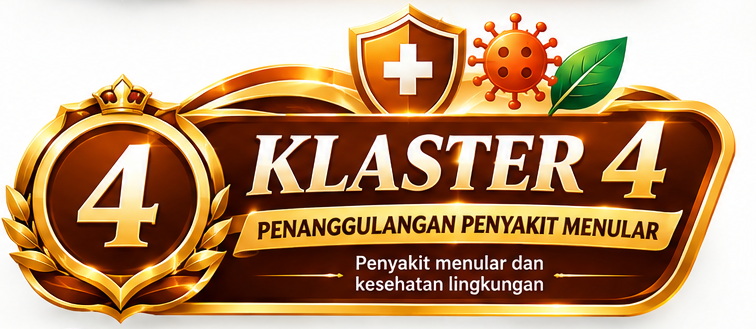

5 KLASTER PELAYANAN
Temukan layanan dengan cepat
Pilih klaster sesuai kebutuhan. Klaster 1 memiliki halaman khusus agar informasi manajemen tidak bercampur dengan daftar layanan pada halaman induk.
Klaster 1 — Manajemen10 area tata kelola dan fungsi manajemen Puskesmas
01
Manajemen Inti / PerencanaanPJ: Nur Saadyah, AM.Keb., SKM
02
Upaya Kesehatan Perorangan (UKP)PJ: dr. Denok Maretta Haq
03
Manajemen ArsipPJ: Desti Wulandari Putri, SKM
04
Upaya Kesehatan Masyarakat (UKM)PJ: Benget Sihotang, SKM
05
Manajemen SDM dan Sistem InformasiPJ: Kiki Ayu Apriani, S.Tr.Keb
06
Manajemen Jejaring dan Jaringan PuskesmasPJ: drg. Widja Darmi
07
Manajemen Sarana, Prasarana & Perbekalan KesehatanPJ: Fatmawati, S.Keb
08
Umum dan Rumah TanggaPJ: Hj. Apt. Susanti, S.Farm
09
Manajemen Mutu dan KeselamatanPJ: Hj. Apt. Susanti, S.Farm
10
Manajemen Keuangan dan AsetPJ: Nur Saadyah, AM.Keb., SKM
Klaster 2 — Ibu & AnakPelayanan kesehatan ibu, bayi, anak, dan remaja
01
Pelayanan Kesehatan Ibu Hamil, Bersalin, dan NifasPelayanan kesehatan ibu sesuai kebutuhan dan kondisi.
02Pelayanan AnakPemeriksaan dan pelayanan kesehatan anak.
03Pelayanan ImunisasiPemberian imunisasi sesuai jadwal dan ketentuan.
04Pelayanan Tumbuh Kembang AnakPemantauan pertumbuhan dan perkembangan anak.
Klaster 3 — Dewasa & LansiaPelayanan kesehatan usia dewasa dan lanjut usia
01
Pelayanan Kesehatan Usia DewasaPemeriksaan dan pelayanan kesehatan bagi usia dewasa.
02Pelayanan Kesehatan LansiaPemantauan dan pelayanan kesehatan lanjut usia.
03Pelayanan Keluarga Berencana (KB)Konseling dan pelayanan keluarga berencana.
04Pelayanan Calon Pengantin (Catin)Pelayanan kesehatan bagi calon pengantin.
05Upaya Berhenti Merokok (UBM)Konseling dan pendampingan untuk mengurangi atau berhenti merokok.

Klaster 4 — Penanggulangan Penyakit MenularPencegahan, deteksi, pengendalian, dan tindak lanjut penyakit menular
01
Pelayanan TuberkulosisSkrining, penemuan, pemeriksaan, pengobatan, dan tindak lanjut TB.
02Pelayanan PDP / VCT / IMSPencegahan, konseling, pemeriksaan, dan tindak lanjut HIV/IMS.
03Penanganan Gigitan Hewan Pembawa Rabies (GHPR)Penanganan awal pajanan gigitan atau cakaran hewan berisiko rabies.
04Pelayanan Klinik SanitasiKonsultasi dan tindak lanjut masalah kesehatan berkaitan dengan lingkungan dan sanitasi.
Klaster 5 — Lintas KlasterPelayanan penunjang dan layanan lintas kelompok
01
Pelayanan Gawat DaruratPenanganan kondisi yang membutuhkan pertolongan segera.
02Pelayanan Kesehatan Gigi & MulutPemeriksaan dan tindakan kesehatan gigi dan mulut.
03Pelayanan Kefarmasian / Resep ObatPenerimaan resep, penyiapan obat, pemberian informasi, dan pemantauan.
04Pelayanan LaboratoriumPemeriksaan laboratorium sesuai indikasi dan ketersediaan pemeriksaan.
05Penanggulangan Krisis KesehatanDukungan pelayanan kesehatan dalam situasi krisis sesuai mekanisme yang berlaku.
06Cek Kesehatan Gratis (CKG)Skrining dan pemeriksaan kesehatan sesuai petunjuk teknis program CKG.